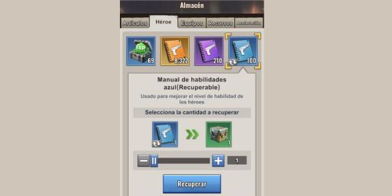
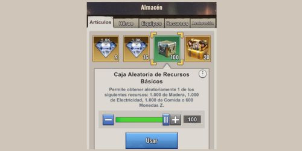

Guia para Iniciantes
Estratégias, edifícios e recursos exclusivos de cada temporada
Aprenda estratégias essenciais para dominar Last Z: Survival Shooter


Os refugiados Mordomo e Diplomata são os mais valiosos do jogo. Priorize consegui-los para acelerar enormemente sua progressão.
Leia mais →

Alinhe 5 heróis da mesma facção em cada tropa para obter ATQ +115%. Priorize Rosa Sangrenta na sua primeira formação.
Leia mais →

Transfira suas melhores armaduras entre formações para maximizar rodadas na Caravana. Passe equipamentos de Rosa → Alba → Guardião conforme avança.
Leia mais →

As contas farm permitem gerar recursos extras e enviá-los para sua conta principal. Aprenda dois métodos para criá-las no mesmo servidor.
Leia mais →

As caixas de recursos aumentam de valor conforme seu nível de Sede. Guarde as caixas douradas e use-as após o nível 27+ para obter mais recursos.
Leia mais →

Sabia que você pode solicitar um cargo de governo no servidor e receber buffs de ataque, construção ou recursos? Só precisa cumprir os requisitos e saber onde pedir.
Leia mais →

Se for gastar dinheiro, priorize Sophia ($1) pela habilidade de construção e o 2º Construtor ($2) para acelerar seu progresso no início.
Leia mais →

Se todos seus heróis rank B têm habilidades no máximo, vá ao Armazém → Herói e recicle os manuais azuis sobrantes. Converta-os em Caixas de Recursos que podem dar Diamantes ou Fragmentos S.
Leia mais →

Em vez de curar todas as suas tropas feridas de uma vez, cure em pequenos lotes conforme a quantidade de membros ativos na aliança. Vai economizar tempo e aceleradores.
Leia mais →

Em vez de clicar repetidamente para doar, mantenha o botão pressionado. Isso ativa multiplicadores (x2, x5, x10) para doar mais rápido e obter mais pontos.
Leia mais →

Antes de atacar, ative a opção "Retorno automático". Suas tropas voltarão sozinhas após o combate sem precisar fazer isso manualmente.
Leia mais →

Se houver um tesouro da aliança longe, você pode chegar mais rápido reforçando cidades ou bases aliadas. Essa velocidade de reforço só funciona dentro do território da aliança.
Leia mais →

Quando receber ou ver um relatório de reconhecimento compartilhado, clique nas coordenadas abaixo do nome do jogador para ir diretamente à localização no mapa.
Leia mais →